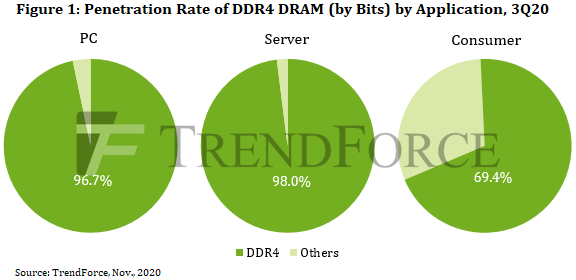
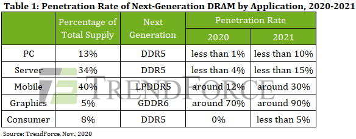
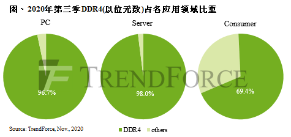
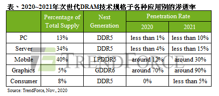
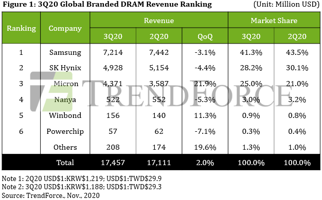
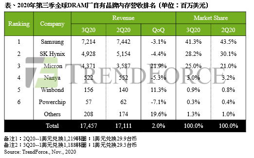
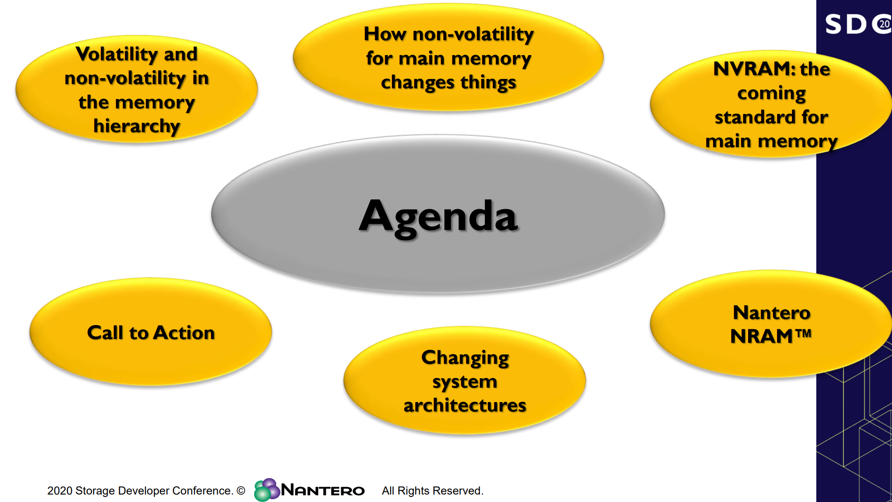
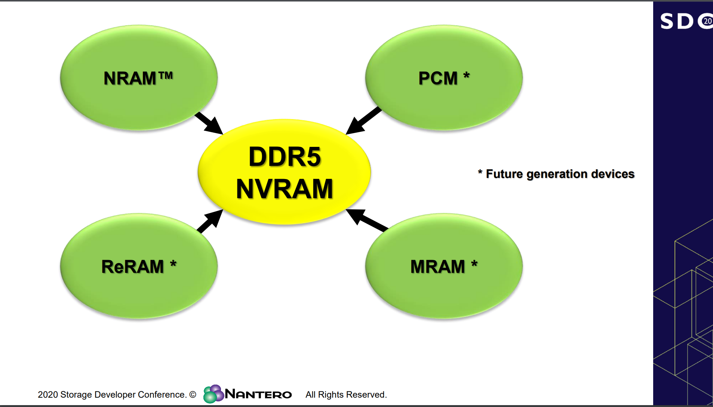
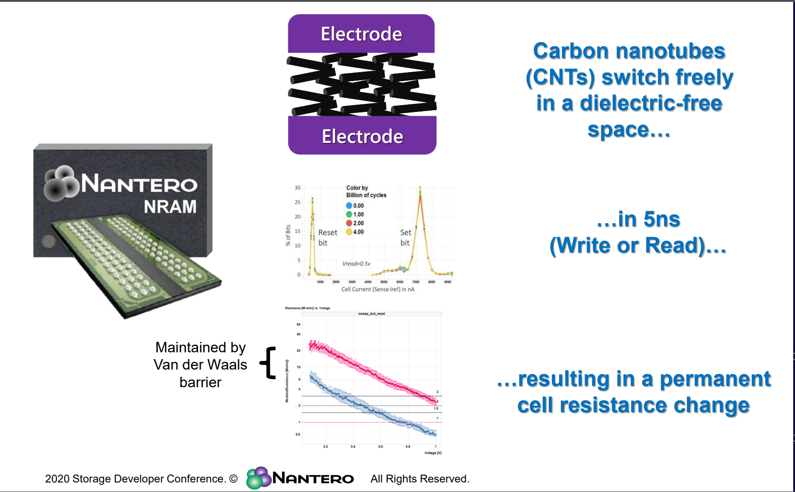
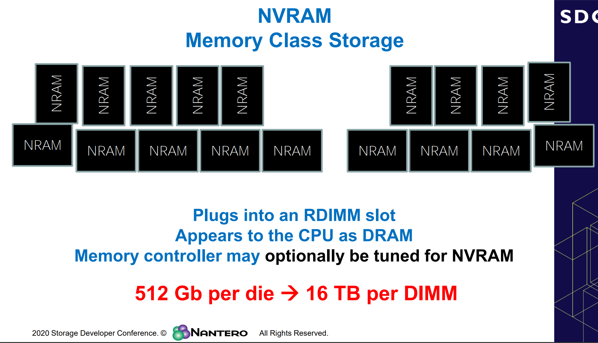

Market Trends
1. DDR5 Era to Officially Begin in 2021, with DRAM Market Currently Transitioning Between Generations(TrendForce 2020-11-03)
As the current mainstream solution for PC DRAM and server DRAM, both of which share the same roots in IC design, DDR4 reached a penetration rate of more than 90% in each of the above two categories in 3Q20, according to TrendForce’s latest investigations. As well, JEDEC finalized the definition of next-generation DDR5 memory in September 2019. Significant increases in the penetration rate of DDR5 PC DRAM is not expected to take place until 2022 at the earliest.
Owing to BOM cost limitations, DDR5 integration for both Intel and AMD PC platforms will be delayed to 2022
Intel and AMD may likely mass produce server platforms supporting DDR5 server DRAM in 2022
Owing to high-end smartphone chips from Qualcomm and MediaTek, LPDDR5 is expected to overtake DDR5 in penetration rate
GDDR6 has become the mainstream graphics DRAM solution and standard spec on new graphics cards from Nvidia and AMD
…………


DRAM市场正值跨世代交替，2021将是DDR5启用元年(集邦咨询, 2020-11-03)
根据TrendForce集邦咨询旗下半导体研究处调查显示，以晶圆设计同源的PC、Server DRAM产品而言，当前最主流解决方案为DDR4，该产品于第三季在前述两大应用类别皆占九成以上。而下一个世代DDR5的定义也已在2019年9月经由JEDEC规范制定完毕，预计PC平台导入的渗透率要到2022年才会明显拉升。
PC端两大供应平台受限BOM总成本结构， DDR5导入计划延至2022年
英特尔、AMD可望在2022年量产DDR5 Server DRAM产品
高通、联发科高端芯片加持，LPDDR5渗透率将超前DDR5
GDDR6已成主流 Graphic DRAM解决方案，英伟达、AMD列为新品标配


2. Rising Shipments and Falling Prices Limit DRAM Revenue Growth for 3Q20 to Merely 2% QoQ(TrendForce, 2020-11-19)
……… During that period, Huawei was aggressively building up its component inventory in response to the tightening of the export control rules. All suppliers posted a QoQ growth in their bit shipments. On the other hand, DRAM prices also made a downward turn in 3Q20. Among the different application segments of the DRAM market, the server DRAM segment exhibited the weakest procurement momentum due to server manufacturers experience excess inventory, leading to a general decline in DRAM prices. For most suppliers, the growth in bit shipments was not enough to offset the drop in quotes. Their quarterly revenues therefore registered a marginal QoQ decline. However, Micron managed to post a significant revenue growth despite headwinds, and its result helped raise the entire industry’s performance. In sum, the quarterly global DRAM revenue for 3Q20 increased by 2.0% QoQ to US$17.46 billion.
Looking ahead to 4Q20, demand will stay at a healthy level for most application segments including PC DRAM, mobile DRAM, and graphics DRAM. The server DRAM segment will be the exception as customers there will still be focusing on getting rid of excess inventory. The persistent weakness of the server DRAM segment will continue to exert downward pressure on the overall ASP of DRAM products. As such, 4Q20 will again see rising bit shipments and falling prices. As for the quarterly global revenue, it is expected to be relatively on par with 3Q20.
As DRAM prices shifted down in 3Q20, Micron’s 21.9% QoQ increase in revenue against headwinds led the industry
…………

2020年第三季DRAM量增价跌压抑营收表现，总产值季增仅2%(集邦咨询, 2020-11-19)
TrendForce集邦咨询旗下半导体研究处调查显示，第三季受惠于华为（Huawei）在9月15日禁令生效前大幅拉货支撑，各家DRAM供应商出货表现皆优于原先预期。然DRAM报价受到server业者库存水位偏高影响，使第三季server DRAM的采购力道薄弱，导致整体DRAM价格反转向下。在出货成长与报价下跌相互抵消的情况下，多数原厂的营收表现较上季小幅下滑，仅美光（Micron）逆势上扬，推升第三季DRAM总产值至174.6亿美元，季增2%。
展望第四季，除server外的其他产品包括PC、mobile及graphics DRAM需求仍将维持稳健；然而在server端库存调整的情况下，server DRAM的拉货力道较难复苏，并将持续压抑整体DRAM报价，因此仍将呈现量增价跌的走势，整体DRAM产值较无明显变化。
第三季DRAM价格反转向下，美光逆势突围季增21.9%居冠
…………

3. 服务器市场迎云端新常态，数据中心成近年DRAM需求主要推手(全球半导体观察 2020-11-25)
TrendForce集邦咨询认为，云端题材持续发酵，助力整体服务器需求扩张，明年服务器的出货大概还会维持6%到7%的成长。与此同时，数据中心的落实成为近年DRAM需求的主要推手，全年占DRAM市场五成以上的消耗量与三成以上的出货量。
11月12日，在由国际高科技产业研究机构TrendForce集邦咨询主办的“MTS2021存储产业趋势峰会”上，集邦咨询资深分析师刘家豪为到场观众带来后疫情时代存储终端市场的分析。
…………
4. Power management chips are latest in reported IC shortages(ASTUTE, 2020-11-16)
The shortage of power management chips (PWM IC) is being reported as “particularly severe”, as the supply of ICs produced with 8-inch wafer fabrication tightens around the globe, reports DigiTimes.
“The IC shortages are delaying shipments of end-market devices that are badly needed to support stay-at-home activities. In response to the robust demand, Microsoft has increased orders for its Surface series notebooks with its ODMs.”
Acccording to DigiTimes, Foxconn Technology chairman Young Liu say the shortages of ICs fabricated at 8-inch fabs will not ease until terminal market demand slows down for notebooks, gaming machines and other devices supporting stay-at-home economy.
…………
Vendor News
1. SAMSUNG IS FIRMLY ON TOP OF THE DRAM MARKET – PROFIT MARGIN HITS 41%(GizChina, 2020-11-21)
According to TrendForce, Samsung is still the leader in the NAND flash memory field. In terms of revenue, its share of the global DRAM market accounts for 41.3% from July to September. However, this is a decrease of 2.2% relative to the previous quarter. TrendForce said that Samsung’s revenue from DRAM chips totaled $7.21 billion in the third quarter of 2020. This is also a decrease of 3.1% from the previous quarter.
……
DRAM MARKET PRICES WILL RISE AGAIN IN Q4 2020
Furthermore, TrendForce said: “Micron’s average selling price in the latest fiscal quarter has declined slightly. In addition, Micron has also benefited from a substantial increase in shipments and a reduction in fixed costs per bit.”
…………
2. Samsung set to splurge on memory chips(The Korea Times, 2020-11-23)
Despite the memory semiconductor industry being less affected by the COVID-19 pandemic than other sectors, there has still been a negative impact on consumer items that is casting doubt on its near-term outlook.
…………
Samsung plans to expand its monthly wafer capacity for DRAMs, flash memory and foundry chips by 30,000, 60,000 and 20,000, respectively, next year.
…………
“The rationale is that there will be a significant undersupply of DRAMs and NANDs throughout next year, thus leading to a price and profit recovery. Samsung Electronics is showing very attractive risks and rewards,” a U.S.-based portfolio asset manager, who invests millions of dollars in Samsung, said Monday.
…………
“It was thought that Samsung would not heavily add wafer capacity in memory chips so as not to repeat the mistakes of 2018, indicative of a more rational supply behavior in today’s upcycle. But it seems Samsung is aiming to adjust its strategy so as to gain a bigger share in the sector amid the digital transition and expected tight supply,” the U.S. portfolio manager said.
3. Micron’s Fab Goes Offline for One Hour, DRAM Prices Go Up (Tom’s Hardware,2020-12-04)
One of Micron’s fabs in Taiwan went offline on Thursday, which startled the market and sent memory spot prices upwards due to supply uncertainty. As a result, while the impact of the disruption is unclear, Micron’s stock upticked. The fab typically pumps out approximately 8.8% of the global DRAM supply.
Micron’s Fab 11, located near Taoyuan City, was taken offline by an unexpected power outage that lasted for a little over an hour. According to United News, the factory immediately activated its safety mechanisms and procedures to avoid casualties and minimize losses. After the power supply resumed, the factory restarted, and the company is now assessing the consequences of the outage.
…………
Production capacity of Micron’s Fab 11 near Taoyuan is about 125,000 wafer starts per month, which represents about 8.8% of the global DRAM supply, reports United News citing TrendForce. The production facility mostly makes DDR4 and LPDDR4 memory using 10 nm-class process technologies.
4. SK hynix: 4Q20 Presents Opportunity to Increase Weighting(businesskorea, 2020-11-17)
We maintain BUY and our TP of KRW110,000 for SK hynix. We think 4Q20 presents an opportunity to increase the weighting of SK hynix considering: (1) The slowdown of chip ASP decline that began in 1Q20 (inventory normalization on both supply and demand side) (2) An expected chip ASP upturn in 2Q21 (favorable supply-demand dynamics) (3) A DRAM supply shortage expected in 2H21 (DRAM/SSD demand for server replacements to begin in 1Q21).
Given our predictions, we expect SK hynix to post 2021 OP of KRW8.5tn (+76% YoY), the highest level since 2018. Anticipated earnings improvement in 2021 makes it more appealing given that its stock is the only one among KOSPI’s top 10 largest stocks to record a negative return YTD (-14%).
New Technology
Update on the JEDEC DDR5 NVRAM Specification(SNIA)



